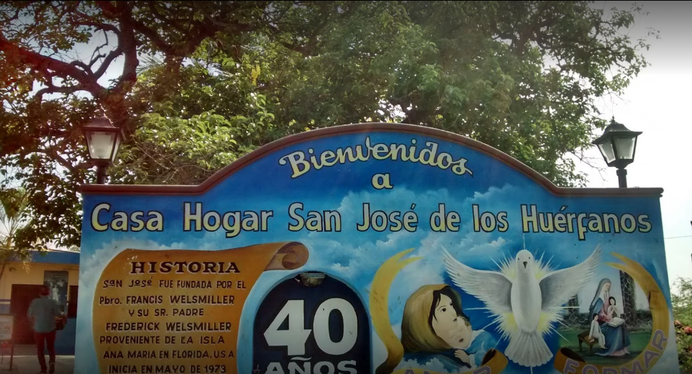
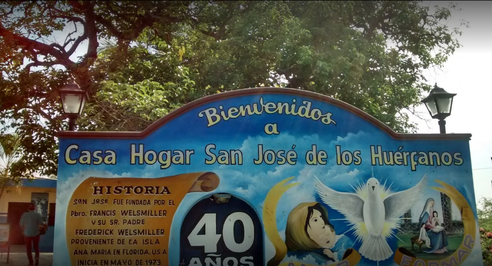

An orphanage, orphanage, orphanage, child care center or "child protection center" is an institution responsible for the care of minors, orphans or abandoned (exhibits) and children or adolescents, to whom the authorities have separated from their parents, withdrawing parental rights. Normally, orphanages are considered as a lower alternative to adoption or foster homes and may be financed by public or private capital, with traditional adjudication to religious entities being traditional.
Most orphanage environments, particularly for infants and young children, do not support the proper growth of the child. In many instances, placement in orphanages can have long-term effects and sometimes permanent in children's brains and in their physical, intellectual and socio-emotional development. Children raised in large-scale orphanages often have widespread growth problems, including growth delays (severe growth retardation), and deficiencies in fine and gross motor skills and coordination. The larger the orphanage, the lower the chances that the child will receive consistent care from a caregiver focusing on the child's individual needs. Typically, children will be fed in groups following a schedule instead of when requested, diapers will be changed at a time instead of when needed, and less attention will be given to individual growth, emotional and social development of the child. Low quality care and a deficiency of individual stimulation can lead not only to health and developmental problems, but also to isolation and lack of identity (the essential sense of being that develops through close relationships).
The negative effects associated with orphanages are more severe the longer a child remains in large-scale residential care, and they are more critical in younger children, especially those under three years of age. The first three years of life are a "sensitive period" where a child requires intimate contact both physically and emotionally. If this is not present, there is a high risk that development will be significantly affected.
In colima, orphanages are not considered as such, but as homes, where children can be found in a state of neglect, in care because parents cannot have time for them (it could be said that some are like boarding school where children are there from Monday to Friday and on weekends they go with their parents), children who suffer interfamily abuse and adolescents who do not have the support of their parents or other close family member.

 
